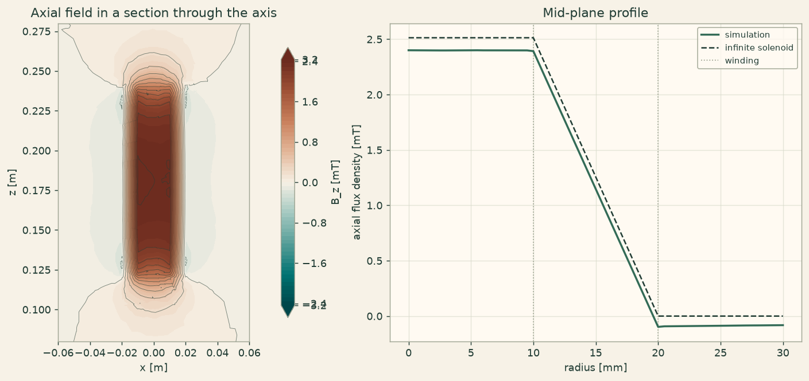
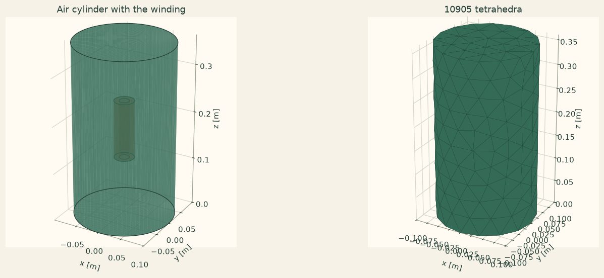

Docs › Examples › Inductance from the magnetic field energy
Magnetostatics · 3D
Inductance from the magnetic field energy
The inductance of a finite thick-winding solenoid extracted from the magnetic energy, graded against the Nagaoka-corrected closed form.

What it computes
OneSimulation solves the 3D magnetostatic field and integrates (1/2) B.H over the domain. The air volume is read from a STEP file with named faces; the script that builds it comes with the notebook.
What it checks
The inductance from the field energy is 294.0 µH against 313.2 µH from the Nagaoka-corrected closed form (-6.2 %); it approaches the reference from below as the winding mesh is refined.
Geometry
The notebook starts at the import of the CAD file solenoid_inductance_from_energy.step: STEP (AP242), readable by any CAD program, with the names of the faces that the boundary conditions use. Put it next to the notebook.

The geometry script
The script solenoid_inductance_from_energy_geometry.py builds the geometry with the CAD objects of OneSimulation and writes the file. Change a dimension there, run it, and run the notebook again.
"""Geometry of the OneSimulation example "Inductance from the magnetic field energy".
Builds the air cylinder around the coil, radius 100 mm and 360 mm long, with the CAD objects of
OneSimulation and writes solenoid_inductance_from_energy.step. The faces keep their names
outer_wall, bottom and top in the file. The winding is no part of the file: the notebook declares it
as a current source, and the mesher embeds its volume in the air.
"""
from onesim.cad.d3 import Cylinder
air = Cylinder(radius=0.100, length=0.360)
air.save("solenoid_inductance_from_energy.step")The notebook
The complete notebook, cell by cell. Run it to produce the figures and the comparison printout.
A circuit designer does not want the field of a coil but the one number it implies: its inductance. It follows from the stored magnetic energy,
The coil is a solenoid with 240 turns, inner radius 10 mm, outer radius 20 mm and length 120 mm, carrying 1 A. The winding is a uniform azimuthal current density. The model solves \(\nabla\times(\mu_0^{-1}\nabla\times\mathbf A)=\mathbf J\) with Nédélec edge elements and a Coulomb gauge in an air cylinder with magnetic insulation on its surface.
The air cylinder comes from the CAD file solenoid_inductance_from_energy.step; the script solenoid_inductance_from_energy_geometry.py builds it with the CAD objects of OneSimulation. The winding is declared as a current source, and the mesher embeds its volume in the air.
Reference. The long-solenoid formula for a winding of finite thickness, multiplied by Nagaoka's end-correction factor \(K\):
\(A_\mathrm{eff}\) accounts for the field falling linearly across the winding. The combination is accurate to about 2 % for this coil.
import numpy as np
from scipy.special import ellipe, ellipk
from onesim.cad.d2 import Plane
from onesim.cad.d3 import AnnularCylinder
from onesim.cad.exchange import load
from onesim.materials import VacuumPermeability
from onesim.meshing import LocalRefinement, TetrahedralMesher
from onesim.numerics import Numerics
from onesim.numerics.fem import FiniteElement, Nedelec
from onesim.numerics.linear import SparseDirect
from onesim.physics.magnetostatics import CoulombGauge, MagneticInsulation, MagneticVectorPotential, Magnetostatics, SolenoidCurrent
from onesim.results.integration import mean_value, measure
from onesim.simulation import Problem, Simulation
from onesim.visualization import theme, plots
theme.set()Geometry and mesh
The winding is an embedded region of the air cylinder, meshed finely enough to resolve the field across its thickness.
air = load("solenoid_inductance_from_energy.step")
centre = air.size[2] / 2
inner_radius, outer_radius, coil_length, turns, current = 0.010, 0.020, 0.12, 240, 1.0
coil = SolenoidCurrent(inner_radius=inner_radius, outer_radius=outer_radius, length=coil_length, turns=turns,
current=current, center=(0, 0, centre), support_factory=AnnularCylinder)
mesh = TetrahedralMesher(target_size=0.04, embedded_regions=(coil.support,),
refinements=(LocalRefinement(region=coil.support, target_size=0.007),)).generate(air)
fig = plots.figure(1, 2, size=(13, 6))
plots.geometry([air, coil.support], title="Air cylinder with the winding", ax=fig[0])
plots.mesh(mesh, groups=("all",), legend=False, title=f"{mesh.cell_count} tetrahedra", ax=fig[1])
plots.show()Model
model = Magnetostatics(domain=air.volume, permeability=VacuumPermeability(),
formulation=MagneticVectorPotential(gauge=CoulombGauge()), current_sources=(coil,))
problem = Problem(name="Solenoid inductance", geometry=air, physics=(model,),
boundary_conditions=(MagneticInsulation(boundary=air.boundaries.all, physics=model),))
numerics = Numerics(spatial=FiniteElement(element=Nedelec(order=2)), linear_solver=SparseDirect())
flux_density = Simulation(problem=problem, mesh=mesh, numerics=numerics).solve_stationary().field(model.magnetic_flux_density)Results
The energy integral runs over the whole air cylinder. The reference is the long-solenoid formula with the effective winding area and Nagaoka's factor.
mu0 = VacuumPermeability().evaluate()
squared = lambda B, position: (B**2).sum(axis=1)
inductance = mean_value(flux_density, component=squared) * measure(flux_density) / (mu0 * current**2)
area = np.pi * (inner_radius**2 + (outer_radius - inner_radius) * (outer_radius + 3 * inner_radius) / 6)
k2 = (inner_radius + outer_radius) ** 2 / ((inner_radius + outer_radius) ** 2 + coil_length**2)
nagaoka = 4 / (3 * np.pi * np.sqrt(1 - k2)) * ((1 - k2) / k2 * (ellipk(k2) - ellipe(k2)) + ellipe(k2) - np.sqrt(k2))
reference = nagaoka * mu0 * (turns / coil_length) ** 2 * coil_length * area
centre_field = flux_density.evaluate([[0, 0, centre]])[0, 2]
print(f"inductance from the field energy {1e6 * inductance:7.1f} µH")
print(f"closed form with end correction {1e6 * reference:7.1f} µH (difference {100 * (inductance / reference - 1):+.1f} %)")
print(f"field at the coil centre {1e3 * centre_field:7.3f} mT ({centre_field / (mu0 * turns / coil_length * current):.3f} of the infinite solenoid)")Figure
The field strength in a section through the axis, and the axial field across the mid-plane against the infinite solenoid, whose field falls linearly through the winding.
axial = lambda B, position: 1e3 * B[:, 2]
r = np.linspace(0, 1.5 * outer_radius, 61)
profile = axial(flux_density.evaluate(np.column_stack((r, np.zeros_like(r), np.full_like(r, centre)))), None)
ideal = 1e3 * mu0 * turns / coil_length * current * np.clip((outer_radius - r) / (outer_radius - inner_radius), 0, 1)
fig = plots.figure(1, 2, size=(13, 5))
plots.section(flux_density, plane=Plane(origin=(0, 0, 0), normal=(0, 1, 0)), component=axial, colormap="diverging",
contours=14, subdivisions=2, label="B_z [mT]", title="Axial field in a section through the axis",
xlimits=(-0.06, 0.06), ylimits=(0.08, 0.28), ax=fig[0])
plots.line(1e3 * r, {"simulation": profile}, reference={"infinite solenoid": ideal},
vlines={"winding": 1e3 * inner_radius, "": 1e3 * outer_radius}, xlabel="radius [mm]",
ylabel="axial flux density [mT]", title="Mid-plane profile", ax=fig[1])
plots.show()Going further
Shorten the coil and watch the end correction grow, or enlarge the air cylinder in solenoid_inductance_from_energy_geometry.py and write the STEP file again: the insulated surface confines the return flux and lowers the inductance slightly. The same recipe with \(\tfrac12\int\varepsilon|\mathbf E|^2\,\mathrm dV\) gives capacitances from electrostatic fields.